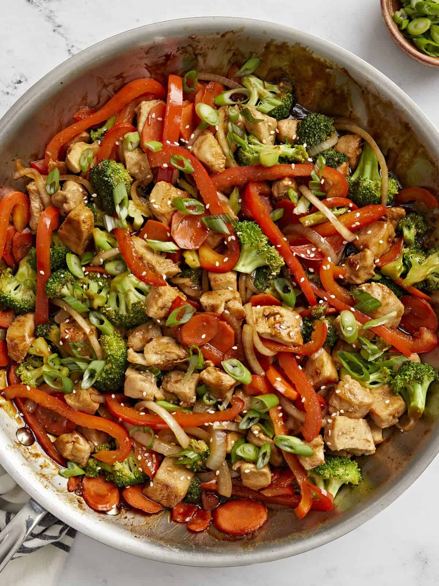

Chicken Stir Fry

Description
This Chicken Stir Fry recipe is perfect for a quick & easy dinner meal. It has lots of chicken and veggies and a super delicious stir-fry sauce!
Ingredients
Stir Fry Sauce
-
1/3 cup soy sauce
-
3 Tbsp brown sugar
-
2 tsp toasted sesame oil
-
2 cloves garlic, minced
-
2 tsp grated fresh ginger
-
1.5 Tbsp cornstarch
-
1 tsp sriracha
Stir Fry
-
2 carrots
-
1 red bell pepper
-
1 small onion
-
2 green onions
-
2 boneless, skinless chicken breasts
-
3 Tbsp cooking oil, divided
Steps
-
Start by making the stir fry sauce. Combine the soy sauce, brown sugar, toasted sesame oil, garlic, ginger, sriracha, cornstarch and water in a small bowl. Set the sauce aside.
-
Chop the broccoli into small florets. Slice the red bell pepper, onion, and carrots into similar sized pieces. Slice the green onions. Set all the vegetables aside.
-
Next, cut the chicken breasts into small 1/2 inch sized pieces.
-
Heat a very large skillet or wok over medium-high heat. Once hot add 2 Tbsp of cooking oil and swirl to coat the surface of the skillet. Add the chicken and cook until browned on all sides. Be careful not to overcook the chicken. Once the chicken is browned, remove it from the skillet onto a separate plate and set aside.
-
In the same skillet, add the remaining 1 Tbsp of cooking oil along with the carrots and broccoli. Cook and stir for one minute, or just until the broccoli begins to turn bright green.
Next, add the red bell pepper and onion to the skillet. Continue to cook and stir for 1-2 more minutes.
-
Give the stir fry sauce another brief stir. Now add the cooked chicken back to the skillet, then pour the stir fry sauce over the chicken and vegetables. Give everything a stir and allow the sauce to come up to a simmer, at which point it will start to thicken and turn glossy. Continue to cook for 1-2 more minutes or until it has reached your desired doneness.
-
Remove the chicken stir fry from the heat, top with green onions and sesame seeds (optional) and serve!